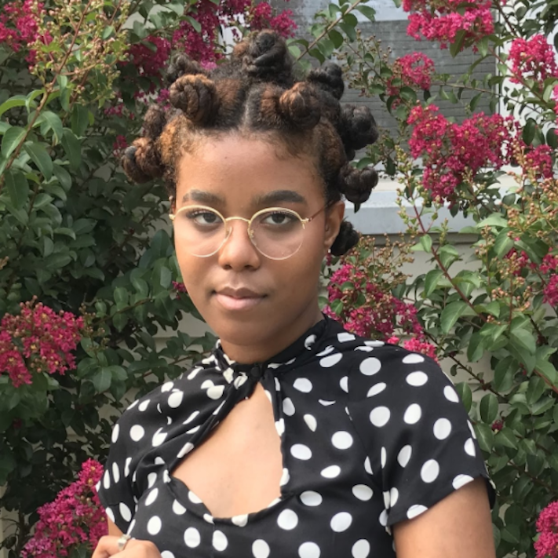
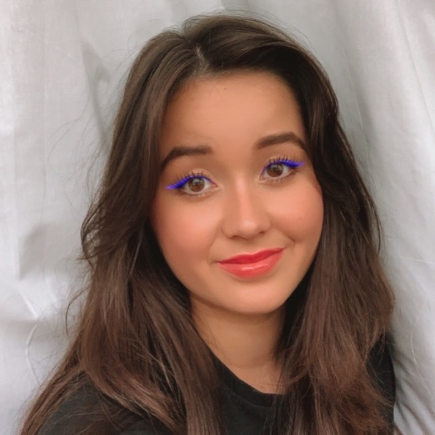

An Interview
....................
Hello readers! Jillian Rees here. A couple of weeks ago, I had the pleasure of interviewing my classmate, Oluschi Harmon, from a distance!
If you don't already know, Oluschi Harmon is a 19-year-old Maryland native who is pursuing a BFA in Communication Design with a minor in Fashion Design, at Parsons School of Design.
Find out Oluschi's unique perspective on fairytales, and whether or not she's ready for low-rise jeans to make a comeback...
....................
How would you describe your personal style?
I would describe my personal style as of fall 20 as sneakerhead mets prep school. But on a wider scale throughout the years, I feel like my style has always incorporated forms of street culture and femininity. There’s something about wearing a dress and a cool pair of limited edition sneakers that just sits right with me.
What is your favorite item of clothing and why?
My favorite item in my closet would have to be my Ji Won Cho x Adidas set. The set is a lavender pair of wide-legged athletic pants and a kimono-style jacket with the 3 stripe logo lining both pieces in white.
I remember when I saw this set first pop up on my timeline when Kendall Jenner was wearing the pants for the campaign, at that moment I knew I needed that set in my life. I wore the set for my junior and senior superlatives since for some reason I thought I was going to win the best dress. Although I did not win, I never felt like I lost that night.
Who or what inspires you most when creating new fashion designs?
In the age of social media, I feel like it plays the role of a double-edged sword when it comes to inspiring what I create next. Sometimes I can feed off the amazing things that others are creating on social media, but other times it can be truly discouraging to my creative process.
What's your most controversial opinion about a popular fashion trend?
When it comes to fashion I always feel like my opinions are constantly changing on what I dislike and like. Like for instance, this year when it came to low waisted jeans, pleated skirts, and sweater vests. In the beginning, I truly hated all of them as a concept and judged everyone who liked them as basic. But due to quarantine, providing me with so much time to think, I was able to reflect on these fashion trends and slowly started to fall in love with them.
The reason I think I fell in love with them is that I was willing to give them a chance and decide to try them out for myself. And this ideology can appeal to most things I ever dislike, you shouldn’t dislike something or someone if you are not willing to give them a chance. You never know you might just fall in love. So although my love for low rise jeans and sweater vests have changed to not judging people anymore and thinking they are basic because they are wearing one, I have learned to love a pleated skirt and I think that counts as growth.
What was your favorite fairy tale growing up?
To be honest, I don’t think I ever really had a favorite fairy tale growing up. I was into superhero movies from a young age and they have always been my sort of fairy tale. Although the fairy tales that Disney produced were cute, I never truly saw myself in them which caused a disconnection between the stories and me.
What was the best vacation you ever took and why?
The best vacation I ever took was probably when I was 7 or 8 and my family went on the Disney cruise. It’s one of my earliest memories of going on the cruise, seen the other times before I was too young to remember. I always had a deep love for the ocean, so being able to spend multiple nights out at sea was always exciting to me. Although the fear of our boat stinking crossed my mind occasionally, I never let the fear overtake me and tried my best to enjoy each and every moment.
We were traveling to the Bahamas, so we would spend 1 day at sea, but when night fell the atmosphere would change. One moment you could see the land, but as the boat inched away into the depth of the sea, you were transported to your own little sphere. It was just you, the stars, the ocean, and a few thousand other passengers. That night, it was my goal to sneak up to the deck at 2 am to watch the stars with my siblings. As the boat swayed back-and-forth, the smoothing rhythm rocked me to sleep.
Who are you closest to, and why?
I am very close to my mom since I kind of disliked most of the people I went to high school with. I found myself spending more time with my mom when she retired from her job and started her journey into college. It was nice to get a taste of what I thought the college workload would be like through my mom.
Also, all my friends during my high school years were really focused on college and getting good grades, so whenever they were not available( which was a lot of the time) I found myself building a better relationship with my mom, which still holds strong to this day.
How would you define your family?
The best way to define my family is dysfunctional. It sounds harsh, but hear me out. I think of something dysfunctional as something that goes against the norms and does not confine to social norms, and that's how I view my family. This feeling of feeling different has always been present within my family because we are Jehovah’s Witnesses. When people meet you and we introduce ourselves as witnesses, some people may have premade and negative judgments of us.
What makes you feel most accomplished?
I feel most accomplished when I am able to feel or see some type of growth in whatever I am doing. When starting a new task, sometimes it becomes daunting to know where to start, to the point where I will procrastinate the task to the last minute.
However, when I push myself over that feeling of failure all I can do from there is going up. Even when the project does not turn out as planned, as long as I gave it my best I feel accomplished in my task. I feel more accomplished if I see some growth whether it’s as an individual or in the work itself, knowing that I can always keep growing my skills and hopefully learn new things.
If everything is as it was before COVID-19, where would you be and what would you be doing?
I would love to be back in New York and enjoying this fall semester with my friends and I taking on the city. I thought this year would be the year I truly get to adult and have things go my way. I was going to get a job, have an apartment, and just live the best life that I could, but things don’t always go as planned.
Although this year felt like crap, I am honestly ok with how most things went. I have been given the opportunity to spend time with my siblings, parents, and grandparents that I thought was lost once we all moved away. I also was given time to better understand who I am as a black girl in this day and age.

